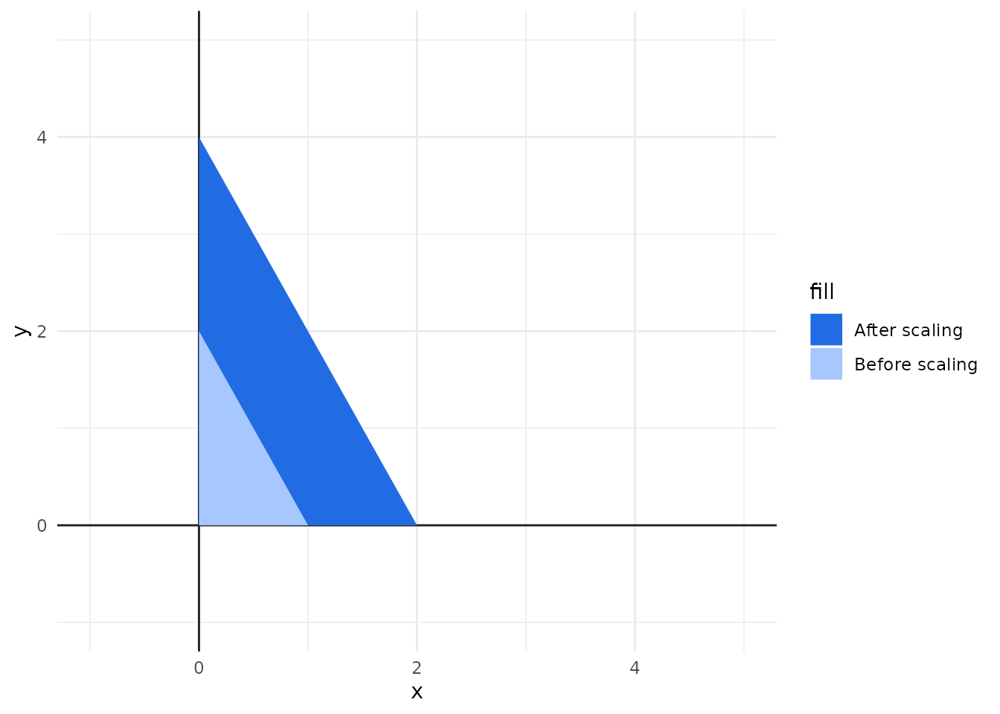
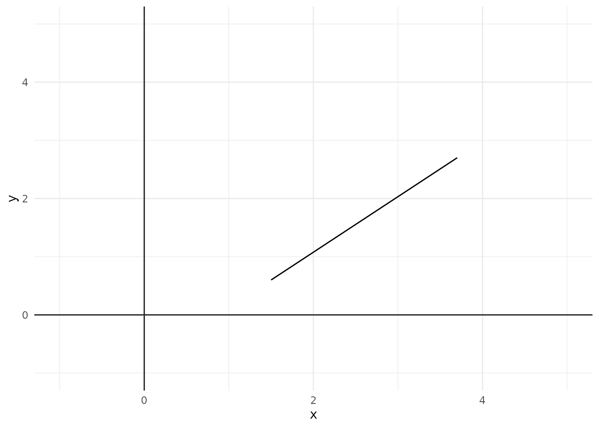
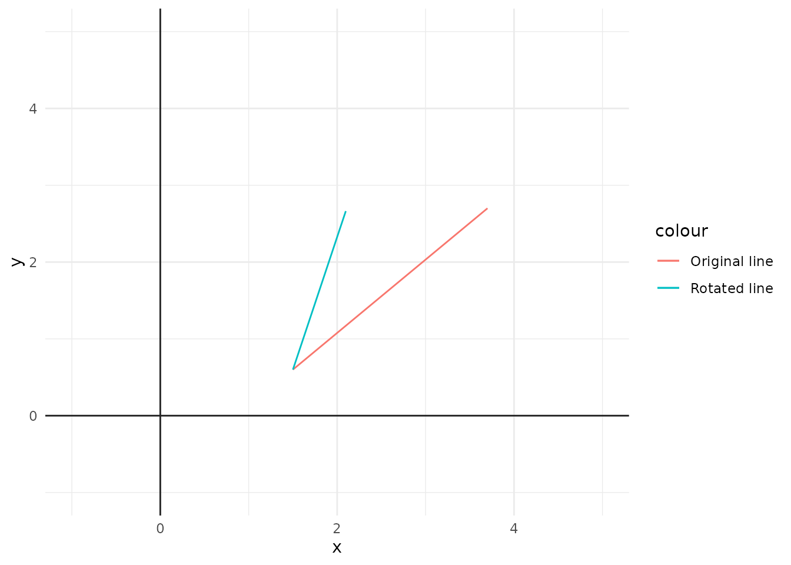

When we are displaying some object (or shape) in an image, we might want to transform this object (or shape) in some way. For example, we might need to move this object to a different location in the image, or we might need to scale this object to a different size, or maybe, to rotate it into a different angle.
In computer graphics, this is called as a transformation. We apply a transformation to the object we have, and this object gets moved in some way in the visual space of our image. There are three basic transformations that are essential to the world of computer graphics, which are:
Scaling.
Translation.
Rotation.
Each of these three basic transformations uses simple math operations over the coordinates of the vertices that compose your object to achieve a specific visual effect/transformation.
2.1 Translation
Lets begin with the easiest and simplest of all transformations, which is translation. A translation is used to move your object to a different position in the Cartesian field.
Figure 2.1 presents this transformation visually. The light blue rectangle represents the original position of the rectangle in the Cartesian field. While the strong blue rectangle represents the new position where the original rectangle was moved to after we applied the translation.
Figure 2.1: An example of translating an object in a Cartesian field
But how translation works? In summary, to translate an object, all you have to do is to add a “x offset” and a “y offset” to all vertices of your object. The “x offset” represents how much you want to move the object horizontally, while the “y offset” represents how much to move the object vertically.
The direction of the movement is determined by the signal of the offset (i.e. if it is a positive or a negative number). For example, if you want to move your object to the right, then, you add a positive x offset to each x position. But if you want to move your object to the left instead, then, you add a negative x offset. The same logic applies to vertical movements.
For example, a triangle have three vertices. If we want to translate this triangle three points to the left, and two points up, then, we need to add the number 3 to the x position, and the number 2 to the y position of the three vertices of this triangle.
The following code demonstrates this idea. We have a first triangle (object triangle), represented by the vertices \((-1,0), (1,0), (0,2)\). Then, we create a new triangle (object translated_triangle) from the first one, by translating it with a x and y offsets to each x and y positions, respectively.
library(ggplot2)
Warning: package 'ggplot2' was built under R version 4.3.2
triangle <-data.frame(x =c(-1, 1, 0),y =c(0, 0, 2))x_offset <-3y_offset <-2translated_triangle <-data.frame(x = triangle$x + x_offset,y = triangle$y + y_offset)canvas <-ggplot() +theme_minimal() +lims(y =c(-1, 5), x =c(-1, 5)) +geom_vline(aes(xintercept =0), color ="#222222") +geom_hline(aes(yintercept =0), color ="#222222")canvas +geom_polygon(aes(x = x, y = y, fill ="Before translation"),data= triangle ) +geom_polygon(aes(x = x, y = y, fill ="After translation"),data= translated_triangle ) +scale_fill_manual(values =c("#226ce3", "#a6c8ff"))
So, if you need to translate any object in your image, you always need to do the same thing, which is to add x and y offsets to the vertices of your object.
However, the way you do this addition can vary depending on the specific geom you are using in your plot. Because different geoms in ggplot2 can treat the vertices of your object very differently. In other words, each geom can use very different strategies to actually build the object your describing with your data, and because of that, you might need to change the way you add these offsets to your data, to actually make the translation work properly.
For example, you can draw rectangles by using geom_rect() or geom_tile(). But these geoms are completely different in the way they draw the actual rectangle. geom_rect() draws a rectangle by using the coordinates of the four corners (or vertices) of the rectangle. In contrast, geom_tile() draw a rectangle by using a single coordinate (which is the center of the rectangle), plus the width and height of the rectangle.
If you needed to translate a rectangle drawn by the geom_rect() geom, then, you do the same logic as the previous code example. But, in the other hand, if your rectangle is drawn by the geom_tile() geom instead, then, all you need to do is to translate a single coordinate, which is the center point of the rectangle.
Scaling is used to scale your object into a different size (i.e. to raise/shrink the size of your object). Figure 2.2 presents this process visually. We begin with the light blue and smaller triangle, and then, we scale this triangle into a bigger size, getting the strong blue triangle as a result.
Figure 2.2: Scaling a triangle into a bigger size
To scale an object, we perform essentially the same thing that we did in translation, which was a simple math operation over the coordinates of the vertices that compose our object. But instead of adding offsets to the coordinates, we multiply each coordinate by a fixed amount/factor.
As an example, lets create a new triangle with the coordinates \((0,0), (1,0), (0,2)\). We can get a triangle that is twice bigger by multiplying each coordinate by a factor of two.
triangle <-data.frame(x =c(0, 1, 0),y =c(0, 0, 2))twice_triangle <-data.frame(x = triangle$x *2,y = triangle$y *2)canvas +geom_polygon(aes(x = x, y = y, fill ="After scaling"),data= twice_triangle ) +geom_polygon(aes(x = x, y = y, fill ="Before scaling"),data= triangle ) +scale_fill_manual(values =c("#226ce3", "#a6c8ff"))
If you want to scale your object, but at the same time, keep the same center position as the original object, then, we need to perform two transformations at once: scaling and translation. We first scale the object to the size we want, and then, we translate this object to the same center position as the original object. Take this case as an example:
triangle <-data.frame(x =c(0.25, 1.5, 0.5),y =c(0.5, 0.5, 2))twice_triangle <-data.frame(x = (triangle$x *2) - (max(triangle$x) /2),y = (triangle$y *2) - (max(triangle$y) /2))canvas +geom_polygon(aes(x = x, y = y, fill ="After scaling"),data= twice_triangle ) +geom_polygon(aes(x = x, y = y, fill ="Before scaling"),data= triangle ) +scale_fill_manual(values =c("#226ce3", "#a6c8ff"))

So all you need to do is to multiply each coordinate by the factor you want to scale the object. If you want a bigger object, then, the factor must be a number greater than 1. But if you want a smaller object instead, then, the factor must be a number between 0 and 1. For example, if you want an object that is half the original size, you should use the factor is 0.5.
2.3 Rotation
Rotation is a transformation used to rotate your object to a different angle. Figure 2.3 presents this transformation visually. We start with the light blue rectangle, which is parallel to the x axis, and then, we rotate this rectangle into a new angle, getting the strong blue rectangle as the result.
Figure 2.3: Rotating a rectangle into a different angle
Rotating an object is a little more complicated than the other transformations. Only because it involves some magic calculations with a little of trigonometry.
Given a coordinate with \(x\) and \(y\) positions in a Cartesian plane, and a angle \(A\) in radians to rotate this initial coordinate, the new \(x'\) and \(y'\) positions of this coordinate after the rotation can be calculated using the formulas below. \(\cos()\) and \(\sin()\) in these formulas are the cosine and sine trigonometric functions.
\[
x' = x \times \cos(A) + y \times - \sin(A)
\tag{2.1}\]
\[
y' = x \times \sin(A) + y \times \cos(A)
\tag{2.2}\]
2.3.1 Remember to convert your angles in degrees to radians
This seems complicated, but, it is actually not. I mean really, you just have to follow these formulas above and you will be happy. But remember one important detail about these formulas: the trigonometric functions cos() and sin() take as input angles that are in radians.
This is important, because we usually think or talk about angles using the degrees measure, which goes from -360 to 360 (e.g. 90 degrees, 180 degrees, etc.). So you must convert your angle in degrees to radians, before you pass it to cos() and sin() functions.
You can do this by using the function deg2rad() that we introduced at Chapter 1. To make life easier, the function definition is repeated below:
# A function to convert degrees to radiansdeg2rad <-function(deg){return(deg * pi /180)}
2.3.2 A first example of rotation
As a first example, lets take a triangle with coordinates \((0,0), (1,0), (0,2)\). Lets consider we wanted to perform two different rotations over this triangle. The first, we rotate it to 30 degrees clockwise, and in the second, 90 degrees clockwise.
triangle <-data.frame(x =c(0, 1, 0),y =c(0, 0, 2))angle <-deg2rad(-30)first_rotated_triangle <-data.frame(x = (triangle$x *cos(angle)) + (triangle$y *-1*sin(angle)),y = (triangle$x *sin(angle)) + (triangle$y *cos(angle)))angle <-deg2rad(-90)second_rotated_triangle <-data.frame(x = (triangle$x *cos(angle)) + (triangle$y *-1*sin(angle)),y = (triangle$x *sin(angle)) + (triangle$y *cos(angle)))canvas +geom_polygon(aes(x = x, y = y, fill ="After second rotation"),data = second_rotated_triangle ) +geom_polygon(aes(x = x, y = y, fill ="After first rotation"),data = first_rotated_triangle ) +geom_polygon(aes(x = x, y = y, fill ="Before rotation"),data = triangle ) +scale_fill_manual(values =c("#226ce3", "#0c3a85", "#a6c8ff"))
Another very important aspect about this operation, is that the above formulas (Equation 2.1 and Equation 2.2) calculate the new coordinates of the object considering the origin point of the Cartesian plane, i.e. coordinate \((0, 0)\) as the “center point of the rotation”.
In other words, instead of rotating around the center point of the object itself, or, rotating around the leftmost point of the vertices of the object, or around whatever other point you imagine, the object is rotated around the origin point of the Cartesian plane.
You can imagine this rotation as if the object followed the circumference of a circle that is centered in the origin point. The radius of the circle that is formed by this circumference is the actual distance that the object is from the origin point.
You can see this fact more clearly by increasing the distance of your object from the origin point. In the example below, the same triangle and rotation angles as the previous example are used. But this time, the original triangle is further apart from the origin point (code is omitted for brevity reasons). To help you visualize, I have also drawn the circle that is centered at the origin point. You can see that the rotated triangles follows the circumference of that circle.
Figure 2.4: Rotating a triangle around the origin point
In the other hand, if you do not want to have this effect in your rotation; if you do not want your objects to have a drastic movement around the plane; if you just want to rotate the object, but, at the same time, preserve it’s current position, then, you need to perform the rotation in three different stages (or steps).
In the first stage, you use translation to move your object to the origin point of the Cartesian plane. In the second stage, you apply the rotation to the object after the previous translation, that is, you use Equation 2.1 and Equation 2.2 to calculate the new x and y positions after the rotation. Then, in the final and third stage, you use translation again to move your object back to the original position it had in the Cartesian plane.
2.4 How to rotate lines
Therefore, you can use Equation 2.1 and Equation 2.2 to calculate the new coordinates of a polygon that was rotated by a certain angle. However, rotating lines is kind of a special case, because it is a bit trickier to rotate lines than most polygons.
2.4.1 Why is it trickier?
I mean, you can still use Equation 2.1 and Equation 2.2, as we were using before, to calculate the new coordinates of a line after you rotated it by a certain angle. You will definitely get an output that is mathematically right. But this output will probably look wrong, and will likely not be what you really want.
Generally speaking, when you are rotating a line, there are two basic scenarios, which are exposed in Figure 2.5. You are normally trying to achieve one of these two scenarios. In the first scenario, you lock one of the endpoints of the line, then, you rotate the rest of the line around this locked point. Is like you were increasing (or decreasing) the angle in one edge of a triangle. In contrast, in the second scenario, we are rotating the entire line around it’s center. Is like when you are playing that “spin the bottle” game in teenagers parties. You are trying to rotate the bottle, but at the same time, maintaining it’s center point intact.
Figure 2.5: Scenarios when you are trying to rotate a line
However, when you use directly Equation 2.1 and Equation 2.2 as we were using before, you get the effect that we described at Figure 2.4. Thus, you rotate the line around the origin point of the Cartesian plane, instead of rotating it around it’s center point, or around one of it’s endpoint.
So when you use Equation 2.1 and Equation 2.2 directly, instead of getting scenario 1 or scenario 2 from Figure 2.5, you would get a visual result that would looks something like this:
Figure 2.6: Rotating a line around the origin point
2.4.2 How to solve it?
But you already know the solution to this problem, because we already talked about it , at the end of Section 2.3.2. If you want to perform a static rotation (i.e. a rotation that just rotate the object and does not move the object around the Cartesian plane), you need to perform the rotation in three stages:
translation to the origin point.
rotate the object.
translation back to the original position.
The essence is the same. So, the first thing that we need to do is to move the line to the origin point in the plane. Now, the way you perform this first step will determine which one of the two scenarios we described at Figure 2.5 you will get.
As the example in this section, let’s use the line described in the plot below. Which have the coordinates \((1.5, 0.6)\) and \((3.7, 2.7)\):
line <-data.frame(x =c(1.5, 3.7),y =c(0.6, 2.7))canvas +geom_line(aes(x,y), data = line)
If you want to apply a rotation over this line that looks like scenario 1, then, you should first choose which one of the two endpoints of the line will be your “locked point”. After you choose the point, you apply a translation over the line, using the x and y positions of the “locked point” as the x and y offsets of the translation.
In this example, let’s suppose we wanted the coordinate \((1.5, 0.6)\) to be our locked point, and also, that we wanted to apply a 35 degrees counter-clockwise rotation to the line. To achieve scenario 1, we would do something like this:
library(dplyr)A <-deg2rad(35)rotated_line <- line |>mutate(x = x -1.5, y = y -0.6) |>mutate(x = (x *cos(A)) + (y *-sin(A)),y = (x *sin(A)) + (y *cos(A)) ) |>mutate(x = x +1.5, y = y +0.6)canvas +geom_line(aes(x, y, color ="Original line"),data = line ) +geom_line(aes(x, y, color ="Rotated line"),data = rotated_line )

Now, if you want to achieve the scenario 2 in Figure 2.5 instead, then, all you need to do is to change the x and y offsets when translating the object. Because in this situation, you want to move the center of the line to the origin point, and not one of the endpoints of the line.
First, we calculate where the coordinates of the line’s center. Once we have that, we use the x and y positions of this center point as the x and y offsets in the translations. As a result, we get a rotation that looks like scenario 2:
xd <- (max(line$x) +min(line$x)) /2yd <- (max(line$y) +min(line$y)) /2rotated_line <- line |>mutate(x = x - xd, y = y - yd) |>mutate(x = (x *cos(A)) + (y *-sin(A)),y = (x *sin(A)) + (y *cos(A)) ) |>mutate(x = x + xd, y = y + yd)canvas +geom_line(aes(x, y, color ="Original line"),data = line ) +geom_line(aes(x, y, color ="Rotated line"),data = rotated_line )

2.4.3 How to rotate a line and keep the same length
Maybe, you have noticed in the previous two examples, that the rotated line got a little smaller in length compared to the original line. This happened because of the way Equation 2.1 and Equation 2.2 works.
But what if you do not want to have this effect? What you should do to avoid a reduction/increase in the length of the line. If that is your case, then, the best solution is to change completely the strategy we are using to rotate the line.
This new strategy, involves the use of another pair of equations to rotate the line. Actually, you already saw this pair of equations here in this book, which are Equation 1.3 and Equation 1.4 that were presented in Chapter 1.
We use Equation 1.3 and Equation 1.4 to calculate the coordinate of any point in the circumference of a circle. But we can also use these equations to calculate the coordinates of a line rotated to a specific angle.
In this context, we want to use the simplified versions of Equation 1.3 and Equation 1.4, which uses a circle that is centered at the origin point of the Cartesian plane. Besides that, in this context, the variable \(r\) that is present both at Equation 1.3 and Equation 1.4 becomes the length of the line we want to calculate.
Having that in mind, given that \(x'\) and \(y'\) are the x and y positions of the line, that \(l\) is the line’s length, and that \(A\) is the angle of the line, we get the following formulas:
\[
x' = l \times \cos(A)
\tag{2.3}\]
\[
y' = l \times \sin(A)
\tag{2.4}\]
By using these equations, we can calculate the coordinates of line with length \(l\), that is in a specific angle \(A\). But in order to use these two equations, we first need to calculate:
the length of our line.
the current angle of our line.
2.4.4 Calculating the length of the line
Let’s start by calculating the length of our line. Remember that, we are using the line with coordinates \((1.5, 0.6)\) and \((3.7, 2.7)\) as our main example here.
Given that \(l\) is the line length that we want to calculate, and that \(x_1\) and \(y_1\) are the x and y positions of any of the endpoints of the line, and that \(x_2\) and \(y_2\) are the x and y positions of the other endpoint of the line, you can calculate the line length by following the formula below. This formula is also known as the “distance formula”.
Is important to emphasize, that you can choose whatever endpoint you want for \(x_1\) and \(y_1\). It can be the leftmost point of the line, or the rightmost. Once you choose the endpoint for \(x_1\) and \(y_1\), the endpoint for \(x_2\) and \(y_2\) automatically becomes the other endpoint of the line.
In our example, lets use \((1.5, 0.6)\) as our endpoint 1, and \((3.7, 2.7)\) as our endpoint 2. With that, the line length is:
We can obviously encapsulate Equation 2.5 into a nice R function that we can reuse whenever we want. If we do that, we get a function similar to line_length() below. You can see that we get the same result as above:
# Function to calculate the length of a lineline_length <-function(x1, y1, x2, y2){ s1 <- (x2 - x1)^2 s2 <- (y2 - y1)^2return(sqrt(s1 + s2))}l <-line_length(1.5, 0.6, 3.7, 2.7)l
[1] 3.041381
2.4.5 Calculating the current angle of the line
You can easily calculate the current angle of a line by using the arc-tangent function with two arguments, also known as the atan2() function from R.
However, before you use this function, you have to move/translate your line to the origin point of the Cartesian plane. This way, you will get a single \((x, y)\) coordinate that is capable of identifying the line, because the other coordinate will always be the origin point - \((0, 0)\).
We can see in the result below, that the new coordinate of the endpoint of the line after we translated it to the origin point is \((2.2, 2.1)\).
translated_line <- line |>mutate(x = x -min(x),y = y -min(y) )translated_line
x y
1 0.0 0.0
2 2.2 2.1
So this is the coordinate we need to use in the atan2() function. For some reason, in atan2() you need to provide the y position first, and the x position second. A little and odd detail about this function.
Anyway, the code below demonstrates that the current angle of our line is approximately 43.6 degrees.
A <-atan2(2.1, 2.2)print(glue::glue("In radians: {A}"))
In radians: 0.762146540586985
D <-rad2deg(A)print(glue::glue("In degrees: {D}"))
In degrees: 43.6677801461304
If you prefer, there is also another method to to calculate the angle of a line. But this other method involves a weird formula from geometry. This formula is used to calculate the angle between two vectors in the Euclidean space.
To use this formula you must provide the coordinates of two vectors. Is worth noting that each vector is identified by a single \((x, y)\) coordinate. Because both vectors starts at the origin point (\((0, 0)\)) and goes to \((x, y)\) coordinate, which is the x and y positions that mark the endpoint of the vector.
Given that \(x_1\) and \(y_1\) are the x and y positions of vector 1, and that \(x_2\) and \(y_2\) are the x and y positions of the other vector, you can calculate the angle (in radians) between these two vectors by following the formula below. In this formula, \(\arccos\) represents the arc-cosine function, which is the inverse function for cosine.
Is a good idea to incorporate this crazy formula into a nice and simple R function, to make our life much easier. If we do that, we get the line_angle() function below as result:
The \(x_2\) and \(y_2\) coordinates should represent the x axis. So, you can set these variables to \(x_2 = 4\) and \(y_2 = 0\) for example. In the other hand, \(x_2\) and \(y_2\) coordinates are the same as we used in atan2(), that is, \(x_1 = 2.2\) and \(y_1 = 2.1\).
You can see below that, by using the line_angle() function we got the exact same results as the atan2() function.
A <-line_angle(2.2, 2.1, 4, 0)print(glue::glue("In radians: {A}"))
In radians: 0.762146540586985
D <-rad2deg(A)print(glue::glue("In degrees: {D}"))
In degrees: 43.6677801461304
2.4.6 Rotating the line
Now that we have the two essential information we needed: 1) the length of the line; 2) the current angle of the line. We can proceed and effectively rotate the line, while, at the same time, maintaining the length of the line intact.
# Current angleA <-atan2(2.1, 2.2)# Current angle + the angle we want to rotateA <- A +deg2rad(35)# The length of the linel <-line_length(1.5, 0.6, 3.7, 2.7)rotated_line <- line |>mutate(x =c(0, l *cos(A)),y =c(0, l *sin(A)) ) |>mutate(x = x +1.5,y = y +0.6 )canvas +geom_path(aes(x, y, color ="Rotated line"),data = rotated_line ) +geom_path(aes(x, y, color ="Original line"),data = line )
Remember, the above example uses the values \(1.5\) and \(0.6\) as the x and y offsets in the translations to produce a rotation similar to scenario 1 presented at Figure 2.5.
If you want a rotation similar to scenario 2 instead, then, you have to change the x and y offsets in the translation to move your rotated line back to the center point of your original line. In other words, if \(l1\) is your original line , and \(l2\) is the rotated version of the line, you have to choose x and y offsets in the translation that will lined up the center point of \(l2\) with the center point of \(l1\).
If we wanted to replicate the scenario 2 for the above example, we would need first, to calculate the coordinates of the center point of both \(l1\) and \(l2\), then, calculate the difference between the coordinates of these two center points, then, use this difference as the x and y offsets in the translation.
Take the case below as an example:
rotated_line <- line |>mutate(x =c(0, l *cos(A)),y =c(0, l *sin(A)) )rotated_centerx <- (max(rotated_line$x)+min(rotated_line$x)) /2rotated_centery <- (max(rotated_line$y)+min(rotated_line$y)) /2original_centerx <- (max(line$x) +min(line$x)) /2original_centery <- (max(line$y) +min(line$y)) /2xd <- original_centerx - rotated_centerxyd <- original_centery - rotated_centeryrotated_line <- rotated_line |>mutate(x = x + xd,y = y + yd )canvas +geom_path(aes(x, y, color ="Rotated line"),data = rotated_line ) +geom_path(aes(x, y, color ="Original line"),data = line )